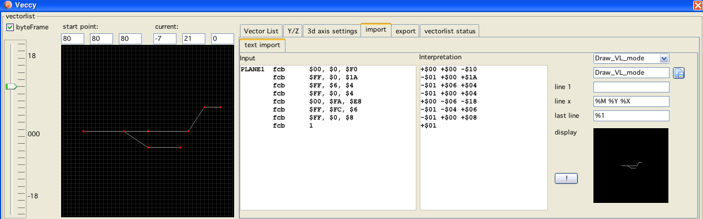
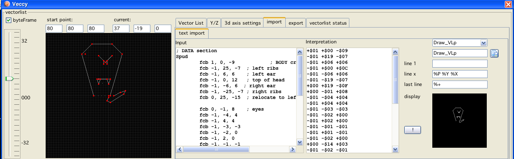

text import
There are different ways you can import vectorlists into vecci.
text import
On the tab "import" the first tab is called "text import".
As text import I summarize imports that one can do via "copy / paste" of some kind of text, sourcecode or other "text" data.
The first textarea is the place where you must put the "text data" that should be imported. This usually should be done via a copy (from some other place) and paste (to the said textarea).
The next textarea is the "interpretation" area. Here is where vecci shows what is its interpretation of the text data you supplied. This will be filled once you press the "!" button (or another interpretation mode is selected → combobox).
To the complete right the black area is the same interpretation shown as a vecci vectorlist-display.
The text you enter is processed the following way:
it is assumed that the text is some kind of source code, this means
lines starting with "*" are discarded
(assumed) comments after a ";" are discarded
whitespaces and many other non-number characters are discarded
user defined "words" are discarded (see below the %R pattern type)
the resulting "words" are "cast" to integer (decimal or hex is recognized)
if the cast resulted in a number, the number is added to a data array
After the above procedure vecci has an array of byte data, that array needs to be interpreted as a vectorlist. Here the user has to step in and help!
The upper right area of the textimport tab is occupied by a combobox. Here you can select what kind of (initially only) BIOS data format the data should be interpreted with.
Once you select an entry, vecci goes to work and shows you the result (in the interpretation as data "statements" and in the vector display window).
Initially vecci is supplied with the most used BIOS vector list formats, but you can add your own formats! That is what the next 4 textfields can be used for.
The data is interpreted using patterns. The user can supply these patterns so that an arbitrary number of formats can be supported. The pattern in general can have 3 entries:
first line
(this usually might be something like a "count"), this can be empty
line x
every line between the first and the last line, here usually the vector list is kept in earnest
last line
the last line can have a break criteria (or can be left empty),
the break criteria always refers to the first byte of the next "line x"
For examples look at the supplied BIOS format patterns.
Following symbols can be used in a pattern line:
only in line 1:
%C0 use byte as counter
%C+ use byte+1 as counter
%C- use byte-1 as counter
%I ignore byte
%X move to x coordinate (relative), pattern = 0
%Y move to y coordinate (relative), pattern = 0
%R"SOMETHING"
removes in the complete interpretation the text SOMETHING (can be inserted multiple times)
it only makes sense to have one of the "%C" statements in line 1!
only in line x:
%X x coordinate (relative)
%Y y coordinate (relative)
%X0 start x coordinate (absolut)
%Y0 start y coordinate (absolut)
%X1 end x coordinate (absolut)
%Y1 end y coordinate (absolut)
%P pattern
%B brightness (intensity)
%M mode (see bios explanation)
%I ignore
only in last line:
%0 end of list, when byte is 0
%1 end of list, when byte is 1
%+ end of list, when byte smaller 128 (but not 0)
%- end of list, when byte is greater equal 128 (unsigned byte obviously) [high bit is set]
Frogger

Frogger example
Patriots

Patriots example
Vaboom

Vaboom example
Bresenham

Bresenham example
Thrust

Thrust example
Spudster

Spudster example